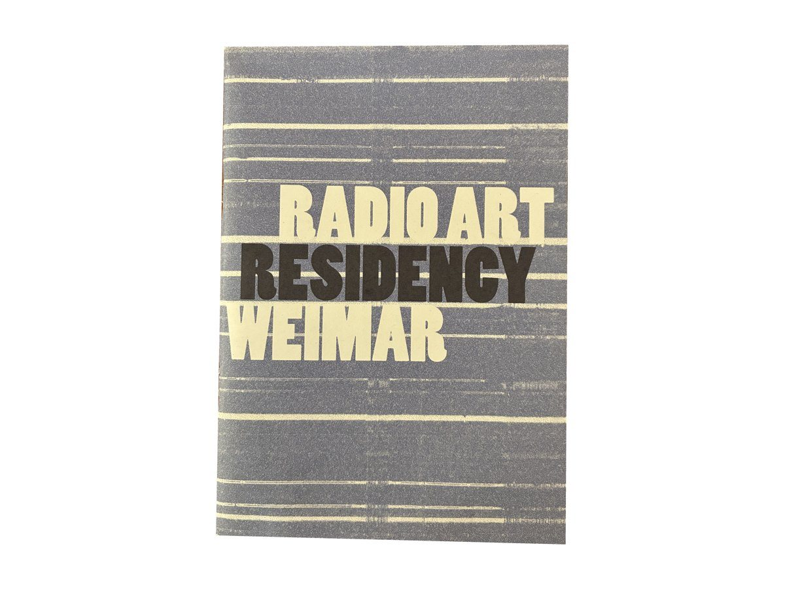

Editorial work
- 2022–2024Transcultural Listening MapBauhaus-Universität Weimar
- 2021–2022Radio Art Residency WeimarGoethe-Institut, Bauhaus-Universität Weimar
- 2019Radiophonic Places - Follow the Radio Wagonbauhaus.fm, Weimar
- 2016Animal Through The State, Fiction Through Reality-Reality through FictionSurvival Kit, Munich/Athens
